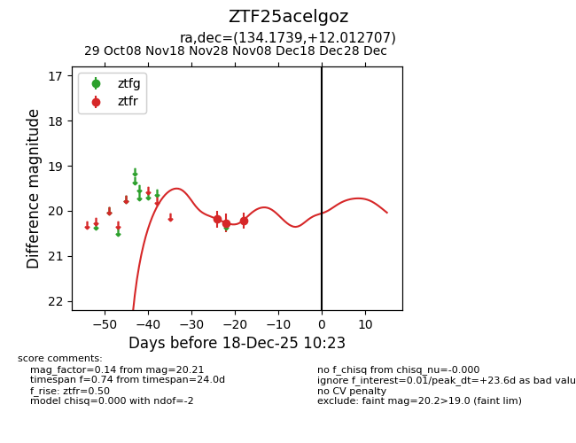
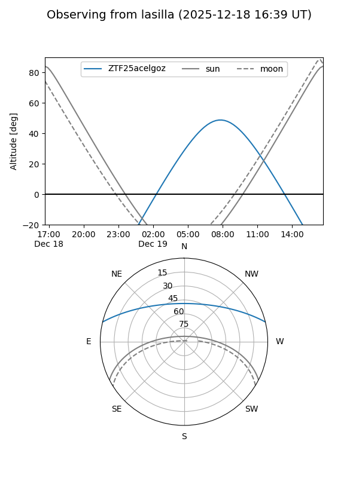

ZTF25acelgoz
Target ZTF25acelgoz at 2025-12-18 11:17
Aliases and brokers:
FINK: fink-portal.org/ZTF25acelgoz
Lasair: lasair-ztf.lsst.ac.uk/objects/ZTF25acelgoz
ALeRCE: alerce.online/object/ZTF25acelgoz
alt names
ZTF25acelgoz (ztf,fink_ztf)
Coordinates:
equatorial (ra, dec) = 134.1739,+12.01271
equatorial (HMS+DMS) = 08:56:41.75,+12:00:45.75
galactic (l, b) = (216.1217,+33.18415)
Photometry
last ztfr=20.21
3 ztfr detections
Lightcurve

Visibility


Additional plots